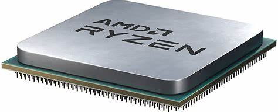
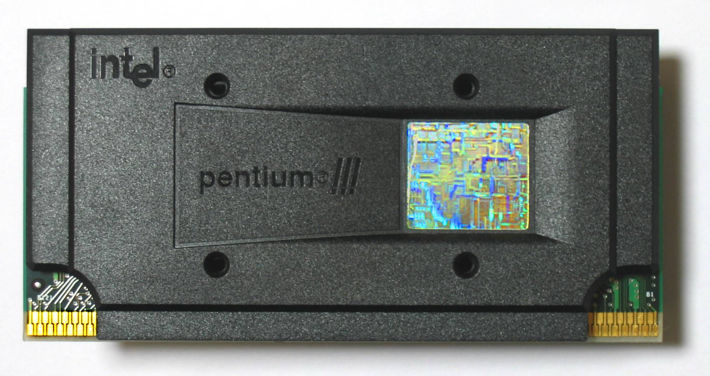

Processador ADM
És el "cervell" d’un ordinador, s’encarrega d’executar les instruccions i tasques del sistema, com obrir programes o navegar per internet.
Més informació

Processador Intel Pentium III
Executa instruccions i fa que l’ordinador funcione, millorant la velocitat i el rendiment respecte a versions anteriors.
Més informació
Microprocessador
És el “cervell” de l’ordinador; executa instruccions i controla les seues funcions.
Més informació
Processador Pentium 4
Executa instruccions i permet que l’ordinador treballe més ràpid, ideal per a tasques bàsiques i multimèdia.
Més informació
Processador Core Duo
Té dos nuclis, cosa que li permet fer diverses tasques al mateix temps i millorar el rendiment de l’ordinador.
Més informació